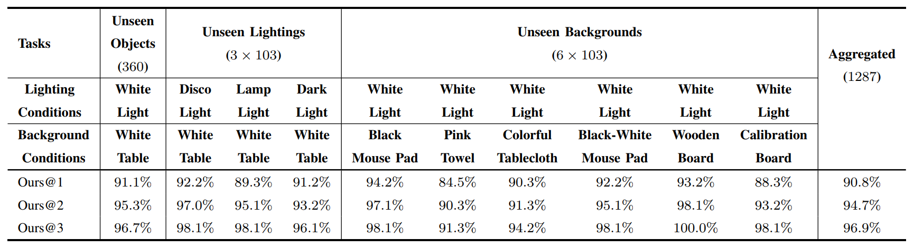

Abstract
Dexterous grasping remains a fundamental yet challenging problem in robotics. A general-purpose robot must be capable of grasping diverse objects in arbitrary scenarios. However, existing research typically relies on specific assumptions, such as single-object settings or limited environments, leading to constrained generalization. Our solution is DexGraspVLA, a hierarchical framework that utilizes a pre-trained Vision- Language model as the high-level task planner and learns a diffusion-based policy as the low-level Action controller. The key insight lies in iteratively transforming diverse language and visual inputs into domain- invariant representations, where imitation learning can be effectively applied due to the alleviation of domain shift. Thus, it enables robust generalization across a wide range of real-world scenarios. Notably, our method achieves 90+% success rate under thousands of unseen object, lighting, and background combinations in a "zero-shot" environment. Empirical analysis further confirms the consistency of internal model behavior across environmental variations, thereby validating our design and explaining its generalization performance. We hope our work can be a step forward in achieving general dexterous grasping.
Framework
Fig. 2: Overview of our framework. DexGraspVLA adopts a hierarchical architecture composed of an off-the-shelf VLM-based high-level planner and a diffusion-based low-level controller. Given a cluttered scene, the planner reasons about the user prompt, e.g., "clear the table", decomposing it into multiple grasping instructions when necessary. For each instruction l, e.g., "grasp the cookie", the planner identifies the target object A from the head image It0 and marks its bounding box (x1A, y1A, x2A, y2A) at initial time t0.
The controller consists of four parts:
- Two segmentation models including SAM, which obtains the object's mask m0 at t0, and Cutie, a video segmentation model that continuously tracks the mask mt during each grasping process.
- Three vision encoders including two frozen DINOv2 that extract features from the third-view image Ith and the first-view image Itv, and a trainable ViT that deals with the mask mt.
- Three MLP projectors that map the visual features and robot proprioceptive state into the same feature space, forming a feature sequence.
- A DiT that predicts an action chunk from at to at+H−1.
During the controller's grasping process, the planner monitors the execution, checks whether grasping succeeds, and assists re-grasping when failing. This process continues until the user prompt is fully completed.
Experimental Results
Performance comparison across different settings and methods
Object Distribution
Distribution of grasped objects across different categories
DINO Feature Analysis

Analysis of DINO features across different environmental conditions